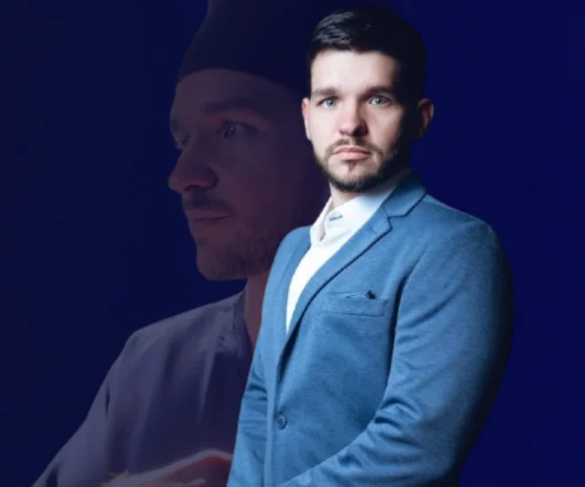
Experiência que une ortopedia, intervenção em dor e medicina regenerativa
Volte a se movimentar com menos dor e mais liberdade.
Tratamentos modernos e minimamente invasivos para dores articulares e artrose, com diagnóstico preciso e um plano individualizado para cada paciente.
Ortopedista, medicina regenerativa e tratamentos guiados por ultrassom
Quem vai cuidar de você
- Ortopedista e Traumatologista, CRM-CE 17431, RQE 13567
- Formação e pós-graduação em Medicina Regenerativa e Intervenção em Dor
- Professor de pós-graduação em Medicina Regenerativa
- Atuação em procedimentos minimamente invasivos guiados por ultrassom
- Mais de 10 mil pacientes atendidos
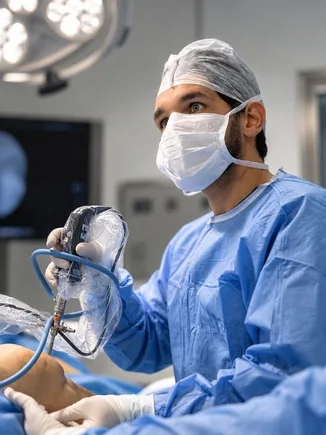
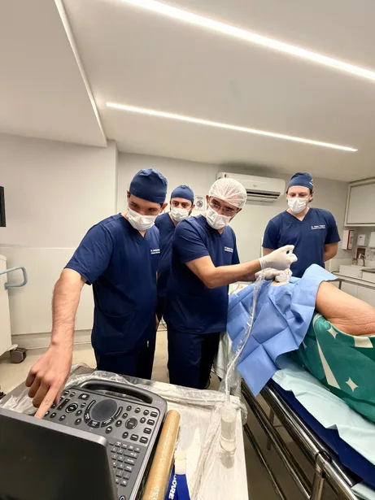
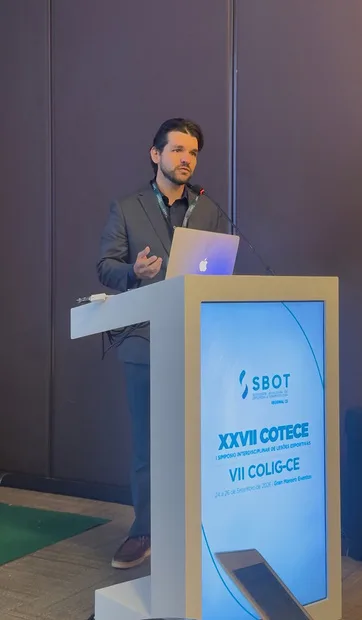
A dor está limitando o que você gosta de fazer?
Caminhar, subir escadas, treinar ou brincar com os filhos não deveriam se tornar decisões guiadas pelo medo da dor. Se o desconforto está afetando sua rotina, o primeiro passo é entender a causa.
Dor ao caminhar ou subir escadas
Incômodo que dificulta tarefas simples do dia a dia.
Rigidez, inchaço ou perda de mobilidade
Mudanças no movimento que merecem uma avaliação individualizada.
Dificuldade para treinar ou praticar esportes
Dor ou limitação que atrapalha sua atividade física.
Receio de precisar de cirurgia
Dúvidas sobre o diagnóstico e sobre as opções disponíveis para o seu caso.
Esses sinais podem ter diferentes causas. A avaliação médica ajuda a identificar o problema e a construir um plano de cuidado adequado.
Opções de tratamento para diferentes necessidades.
- Tratamentos para artrose e desgaste articular
- Dor na coluna
- Medicina regenerativa e ortobiológicos
- Tratamentos intervencionistas para dor
- Lesões esportivas e tendinopatias
- Cirurgia do joelho, quando realmente indicada
- Terapias físicas
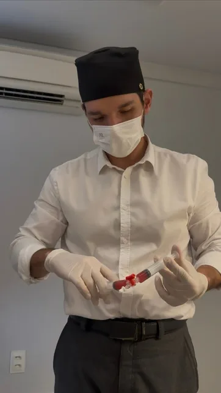
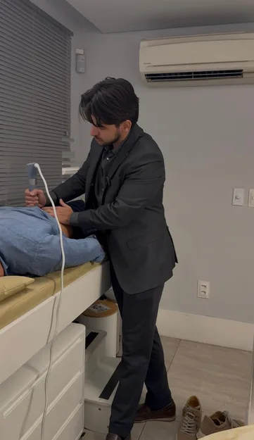
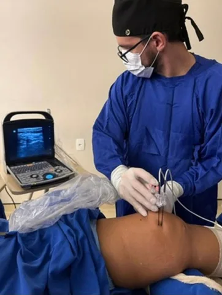
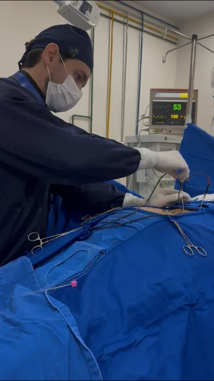
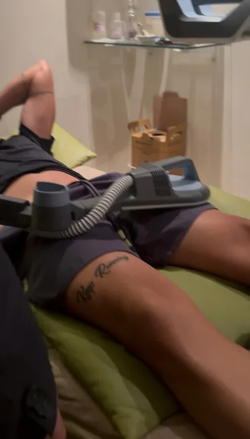
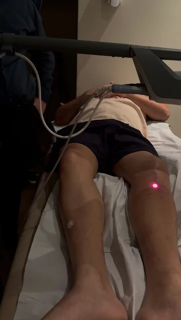
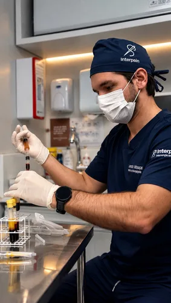
Uma consulta para entender a causa, não apenas tratar o sintoma
Antes de escolher um procedimento, é preciso entender sua história, examinar seus movimentos e relacionar os sintomas aos achados dos exames. A avaliação é o ponto de partida para decidir o que faz sentido para você.
- 1Avaliação detalhada
- 2Análise dos exames
- 3Exame físico
- 4Ultrassom, quando indicado
- 5Explicação do diagnóstico
- 6Opções de tratamento
- 7Plano individualizado
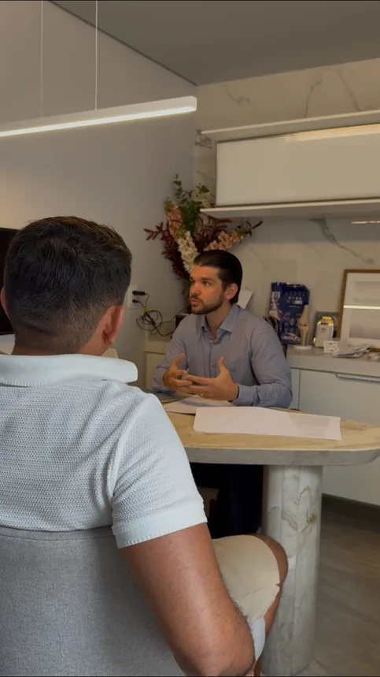
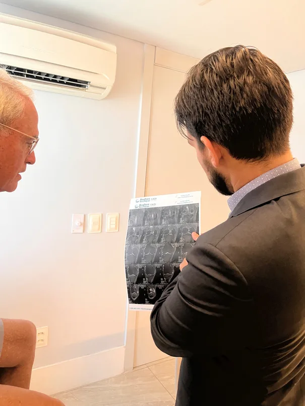
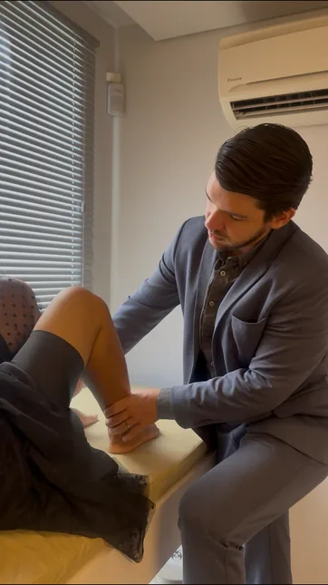
Por que escolher o Dr. Leonardo?
Cada paciente tem uma história, uma condição física e uma expectativa diferente. O atendimento reúne avaliação, explicação e planejamento para que as decisões sejam feitas com clareza.
- Diagnóstico preciso
- Não existe tratamento avançado sem entender primeiro a origem da dor.
- Tecnologia no próprio consultório
- Recursos diagnósticos e terapêuticos integrados ao atendimento, conforme indicação.
- Tratamentos minimamente invasivos
- Alternativas modernas são consideradas quando adequadas ao diagnóstico.
- Reabilitação integrada
- Procedimento e fortalecimento trabalham juntos.
- Acompanhamento
- O tratamento não termina no procedimento.
A experiência de quem já foi atendido.
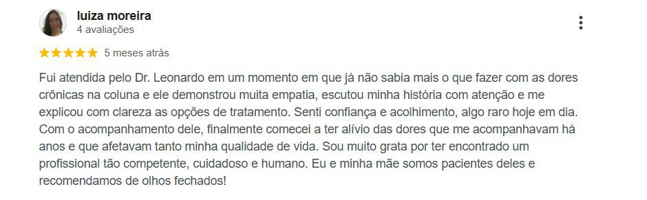
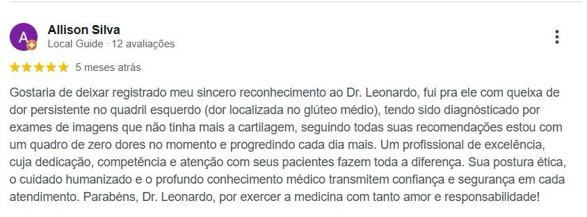
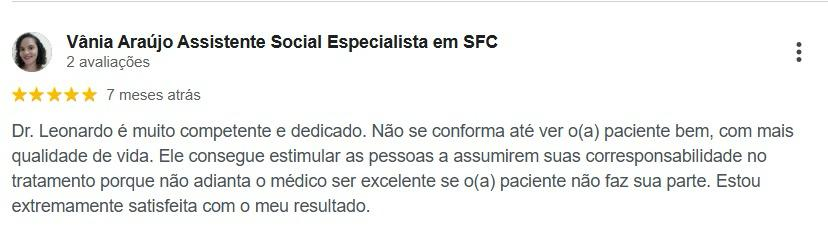
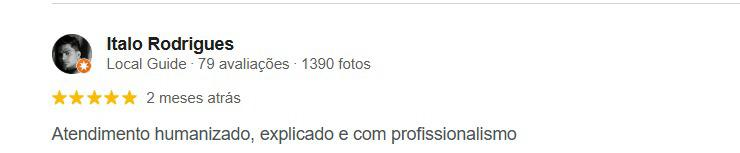
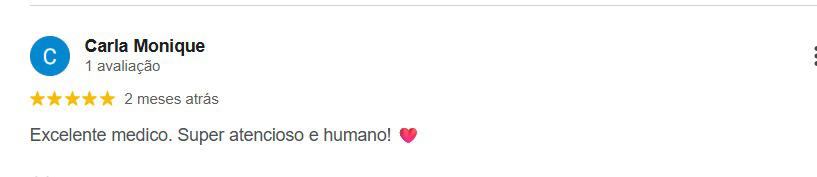
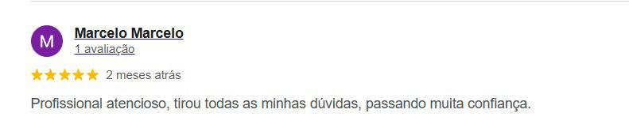
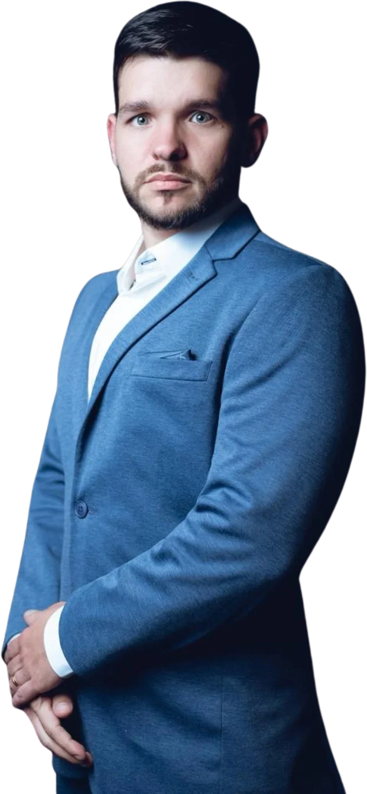
Dr. Leonardo Rebouças
Ortopedista e Traumatologista, CRM-CE 17431, RQE 13567
O Dr. Leonardo Rebouças atua em Fortaleza no cuidado de lesões ortopédicas e condições que afetam o movimento. Sua abordagem reúne avaliação individualizada, tratamento médico e reabilitação, com atenção à dor, à função e aos objetivos de cada paciente.
De uma caminhada sem tanto desconforto ao retorno ao esporte, o plano de cuidado considera aquilo que é importante para a sua vida.
Além da atuação clínica, é professor e sócio da Interpain, onde participa da formação de médicos em medicina regenerativa. Sua experiência no ensino reforça o compromisso com o estudo e a discussão das opções de cuidado.
Respostas prontas para reduzir dúvidas.
Ficou alguma dúvida? Ela pode ser respondida na sua avaliação, olhando o seu caso de perto.
Todo caso precisa de infiltração?
Não. O tratamento pode envolver orientações, medicamentos, fisioterapia e exercícios. Procedimentos são considerados quando há indicação para o seu diagnóstico.
É possível tratar sem cirurgia?
Em muitos casos, existem opções não cirúrgicas. Em outros, a cirurgia pode ser o caminho mais adequado. A avaliação ajuda a discutir as alternativas, os benefícios e os riscos para o seu caso.
PRP e ácido hialurônico servem para qualquer paciente?
Não. São recursos com indicações específicas. A escolha depende do diagnóstico, dos sintomas, das condições de saúde e da avaliação médica.
O procedimento dói?
A sensação varia conforme o procedimento e a sensibilidade de cada pessoa. Os cuidados para conforto, os riscos e as orientações após a aplicação são explicados antes do tratamento.
O tratamento é feito no consultório?
Algumas avaliações e procedimentos podem ser realizados no consultório. Outros exigem estrutura específica. O local adequado é definido de acordo com a técnica e as necessidades do paciente.
Quando posso voltar a treinar?
Isso depende da condição tratada, do procedimento realizado e da sua evolução. O retorno é orientado de forma individualizada e pode ser gradual.
Como agendar a consulta?
Entre em contato pelo WhatsApp. A equipe informa a disponibilidade de horários, o local de atendimento e as orientações para a consulta.
Consultório na Aldeota
Av. Dom Luís, nº 880, sala 1
Aldeota, Fortaleza, CE
CEP 60160-230
- Agendamento
- WhatsApp (85) 8165-0536, somente com horário marcado
- Responsável técnico
- Dr. Leonardo Rebouças, CRM-CE 17431, RQE 13567
Seu próximo passo começa com um diagnóstico preciso.
Agende sua avaliação com o Dr. Leonardo e entenda quais opções de tratamento são adequadas ao seu caso.
Agendar pelo WhatsAppou ligue para (85) 8165-0536